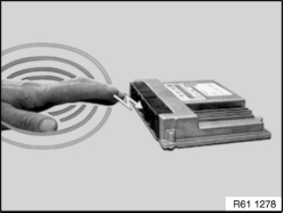
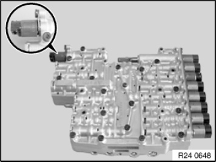
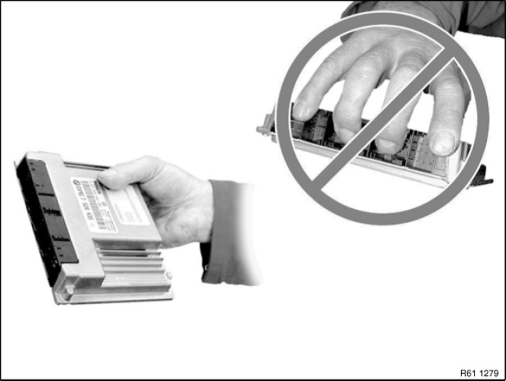
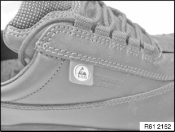

61 35 ... Notes on ESD Protection (Electro Static Discharge)
61 35 ... Notes On ESD Protection (Electro Static Discharge)
Special tools required:

NOTE:
Electrical components which are particularly sensitive to electrostatic discharge (electronic control units, sensors, etc.) are marked with the ESD warning symbol.
E-Electro
S-Static
D-Discharge

IMPORTANT: Read and comply without fail with the notes on this subject from Service Information 2 06 04 128.

Statically charged persons can discharge themselves when they touch electrical components.
NOTE:
Humans can only detect a discharge starting from a level of approx. 3000 V.
The danger threshold for electrical components already starts from a level of approx. 100 V.


Example:
Mechatronic control unit.
IMPORTANT:
Do not touch pins and multi-pin connectors directly.
Touch electrical components by their housings only.
IMPORTANT:
To avoid damaging or destroying electrical components as a result of electrostatic discharge, it is absolutely essential to observe the following instructions:
- When replacing electrical components, leave the replacement components in their original packaging until immediately before they are to be installed
- If necessary, always return a removed component in its original packaging (always pack the component away immediately)
- Read and comply with user information on using the associated special tool 12 7 060

Personal protective equipment:
Electrically conducting clothing (high wool content, antistatic shoes required). These can primarily be identified by the logo on the side.